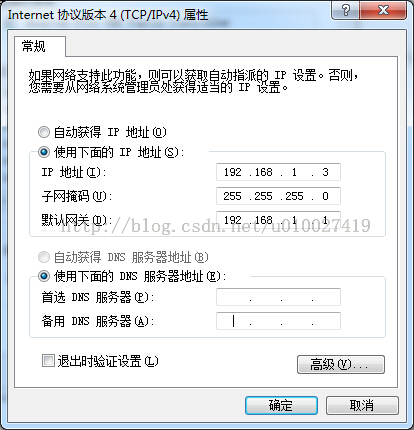

本文用到的固件bin和njit插件 http://download.csdn.net/detail/u010027419/8197369 固件并非最新版本，最新版本存在兼容问题。更新版本可在http://downloads.openwrt.org.cn/PandoraBox/HuaWei_HG255D/自行查看 pandorabox为openwrt定制版固件，集成常用软件包，方便使用
刷openwrt
-
下载好固件之后，将路由器多余的线拔掉，关闭路由，只留路由的lan口和电脑的连线及电源线，本人一般常用的是lan3口，之后将电脑的无线断掉，防止干扰，并且将有线的ip设置成如图 
-
捅住reset口，打开电源，，五秒后放开reset，若路由器power灯常量，则进入刷机模式。在浏览器中输入192.168.1.1进入刷机界面
重要提示，如果无法进入或提示404或如图所示自己跳转到http://192.168.1.1/cgi-bin/luci页面，则需要清除页面缓存，或者更换浏览器进行
-
路由器刷新完成后会自动重启，具体时间不一定，请一定耐心等候。刷机完成后路由会自动重启
-
等系统重新启动完成后输入192.168.1.1进入路由界面，刷机完成 ps:默认用户名密码 root/admin
安装inode拨号程序
此程序为基于njit定制版，理论支持代替5.2以下（不包含5.2）的所有inode拨号 5.2以上版本会出现无法连接或者连上后不停掉线等不确定问题
- 编辑
/etc/opkg.conf在末尾加上
arch all 100
arch ralink 200
arch ramips 300
arch ramips_24kec 300
或直接讲附件中的opkg.conf 将其替换
使用winscp将附件中的两个ipk复制到路由根目录下 进入根目录 执行
opkg install libpcap_1.1.1-2_ramips.ipk
opkg install luci-app-x3c8021x_0.11+svn9957-1_ramips.ipk
安装完成后重启路由器
点击网络-接口-修改wan口设置 配置ip为你的申请的ip，并将其余参数设置完成，点击保存，点高级设置，将mac克隆成绑定的mac，勾选开机自动运行。点击保存&应用
点击网络-H3C校园网络认证根据实际情况设置好自己的参数，（此处wan口为eth2.2，视情况而定）点击保存&应用。
将物理的线路接好，重启路由器，配置正确的话此时应该已经可以上网。
Comments
comments powered by Disqus